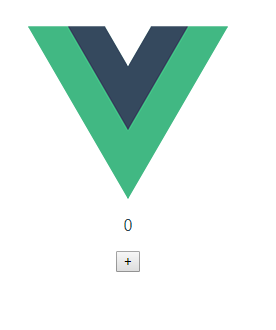
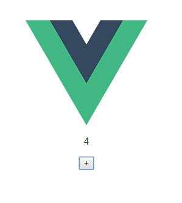

原文出处:本文由博客园博主老衲吃个饭提供。
原文连接:https://www.cnblogs.com/dwvfw855/p/10855803.html
原文连接:https://www.cnblogs.com/dwvfw855/p/10855803.html
一. 什么是vuex？
Vuex是一个专为了vue.js 应用程序开发的状态管理模式
二.为什么要用vuex?
构建一个大型单页面应用程序时，Vuex可以更好的帮我们的组件外部更好的统一管理状态
类似服务端的session（单纯的比较）
三.Vuex的核心观念
-
State
是唯一的数据源
单一状态树

-
Getters
通过Getters可以派生一些新的状态

通过Getters 操作只需要done的属性
-
Mutations
更改vuex的store中的状态的唯一方法提交Mutations

调用

-
Actions
Action提交的是mutation,而不是直接变更状态
Action可以包含任意异步操作

-
Modules
面对复杂的应用程序,当管理的状态比较多时,我们需要将Vuex的store对象分割成模块(Modules)

四.Vuex状态管理

因为是初次写文章以及是后端开发人员,所以能明白,因为和后端思维是通的,但是无法深刻写出对其的完整理解,见谅
五.使用方法
1.安装
`npm install Vuex --save`
2.引入项目
2.1在src目录下新建Store.js ,编写如下代码
import Vue from 'vue'
import Vuex from 'vuex'
Vue.use(Vuex)
export default new Vuex.Store({
state:{
count:0
},
mutations:{
increment:state => state.count ++,
decrement:state => state.count --,
}
})
2.2在main.js 引入该js
import Store from '../src/store/store'
2.3 挂载Store
new Vue({
el: '#app',
Store,
router,
components: { App },
template: '<App/>'
})
2.4 新建Test.vue 并建立对应路由 编写如下代码<template>
<div>
{{ count }}
<p>
<button @click="incre">+</button>
</p>
</div>
</template>
<script>
export default {
methods:{
incre(){
this.$store.commit('increment')
},
},
computed:{
count(){
console.log(this.$store.state.count);
return this.$store.state.count
},
}
}
</script>
<style scoped>
</style>运行结果



后记
通过该vuex示例，了解vuex的常用配置及方法调用。希望对不怎么熟悉vuex的同学快速上手vuex项目有点帮助。
因为没太多东西，我自己也是刚接触，本例就不往GitHub扔了，如果尝试了本例，但是没有跑起来的小伙伴，可以一起交流下。